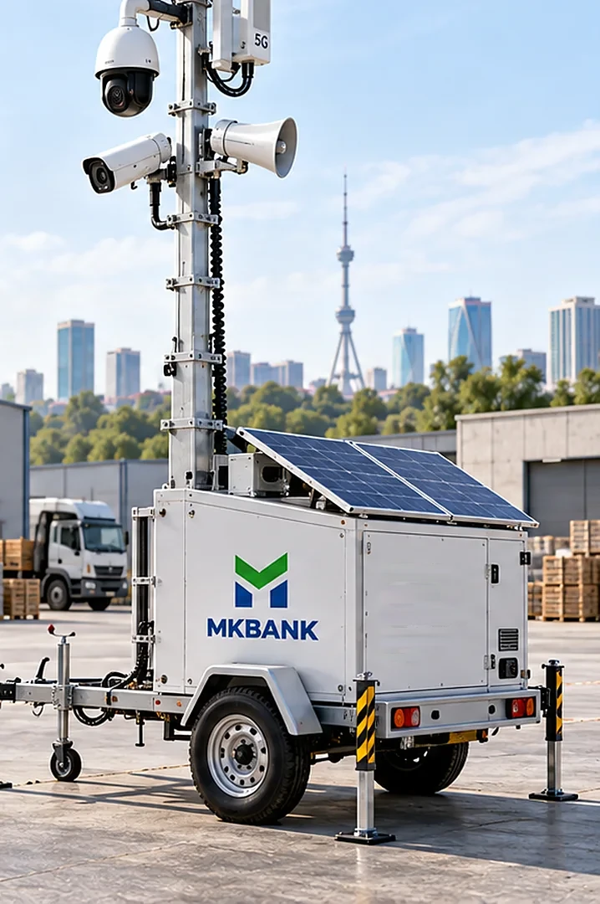

Minora bir gektarlik maydonni bir kunda qamrab oladi va hovli bo'ylab tarqatilgan sakkizta statik kameraning ishini bajaradi. U binoni emas, maydonni qo'riqlaydi — shuning uchun uni ichki xonaga qo'yish mantiqsiz.
45–55 Vtkomplekt yuki
1,7 kVt·soatdekabrda panel beradi
5–6 kunquyoshsiz zaxira
40–120 mlnyoki oylik ijara

Teleskopik machta, 360° PTZ kamera, karnay va akkumulyatorga zaxira beruvchi quyosh panellari
01
Tirkamada nima bor
Namuna sifatida AL3000 sinfidagi tirkama olingan: uch dona 470 vattli panel, to'rt dona 200 amper-soatlik akkumulyator va yetti metrdan baland teleskopik machta. Bozorda mahalliy yig'ilgan variantlar ham bor va ular ikki barobar arzon.
Jihoz
Vazifasi
Talab
Dona
360° PTZ kamera, IR bilan
Butun maydonni aylanib ko'radi va hodisaga buriladi4–6 ta preset yoziladi: darvoza, burchak, texnika turgan joy
ONVIF Profile S va T, ONVIF PTZ
1
Statik kamera
Darvoza, burchak va texnika turgan joyni doim ko'rib turadi
Chiziq kesish analitikasi kamerada
2–4
Karnay va sirena
Operator ovozli ogohlantirish beradi
Kamera signal chiqishi yoki router relesi orqali
1
LiFePO4 akkumulyator, 24 V
Quyoshsiz kunlarni ko'taradi4 × 200 A·soat, 2S2P: 24 V da 400 A·soat, ya'ni 9,6 kVt·soat
Isitgichli yoki past harorat himoyali BMS
4
Quyosh paneli
Kunduzi akkumulyatorni to'ldiradi
3 × 470 Vt, qishki burchakka sozlanadigan ramka
3
Quvvat kontrolleri
Zaryadni boshqaradi va telemetriya beradi
Modbus TCP yoki MQTT chiqishi bilan
1
4G yoki 5G router va NVR
Tunnel va joyida yozuv
Ikki SIM, VPN; NVR SSD bilan
1
AL3000 sinfidagi tirkama taxminan 1 300 kg. Uni tortish uchun ilgakli avtomobil va tegishli toifadagi haydovchi kerak — bu ko'chirish xarajatining asosiy qismi.
Machta faqat ishlab chiqaruvchi belgilagan shamol chegarasidan past bo'lganda ko'tariladi. Ko'tarilgan machta bo'ronda tirkamani ham, kameralarni ham birdan yo'q qiladi — bu yechimning eng qimmat nosozligi.
02
Qishki sutka: qurilish maydoni, 21-dekabr
Eng qisqa kun. Minora bu sutkada zaryadga emas, zaxiraga yashaydi: panel bergan energiya kunning atigi olti soatida keladi, qolgan o'n sakkiz soat butun yuk akkumulyatorda turadi.
00:00tun
Akkumulyator 71 foizda
PTZ kechasi bitta nuqtada turadi va aylanmaydi — bu 10 vattgacha tejaydi. Yuk 45 Vt: PTZ IR bilan, ikki statik kamera, NVR va router. Tunda sarf 0,81 kVt·soat.
Tungi sarf: 45 Vt × 18 soat
03:40hodisa
Chiziq kesildi va PTZ buriladi
Statik kamera hovli chegarasida chiziq kesilganini aniqlaydi. Platforma PTZ ni shu presetga buradi va klipni saqlaydi. Operator odamni ko'radi va karnaydan ogohlantirish beradi: «Hudud videokuzatuv ostida». Ko'p hollarda bu yetarli bo'ladi va odam ketadi.
Epizod: PTZ aylanishi va karnay 0,02 kVt·soat
07:50tong
Quyosh chiqadi, panel hali bermaydi
Toshkentda 21-dekabrda quyosh 07:50 da chiqadi va peshinda ufqdan atigi 25 daraja ko'tariladi. Birinchi soatda panel deyarli hech narsa bermaydi: nur burchagi juda past va sovuq panel sirtida shudring bo'ladi.
11:00kunduz
Panel kunlik ulushini beradi
Uch dona 470 vattli panel qishki burchakka o'rnatilgan. Dekabr insolyatsiyasi 1,62 kVt·soat/m², yo'qotishlar 25 foiz: sutkasiga taxminan 1,7 kVt·soat. Bu 45 vattlik yukning 1,08 kVt·soatidan katta, lekin zaxira atigi 30–55 foiz.
Kunlik ishlab chiqarish: 1,7 kVt·soat
17:15kech
Quyosh botadi, IR yonadi
Kun 9 soat 25 daqiqa davom etdi. IR yoritgich yonadi va yuk 45 vattdan 55 vattga chiqadi. Akkumulyator 88 foizda — kunduzgi ortiqcha energiya zaxirani biroz to'ldirdi.
23:00yakun
Sutkalik balans
Ishlab chiqarish 1,7 kVt·soat, sarf 1,2 kVt·soat. Ortiqcha 0,5 kVt·soat zaxiraga ketdi. Bulutli hafta boshlansa, shu zaxira va akkumulyatorning 9,6 kVt·soati besh-olti kunga yetadi — keyin zaxira manba kerak bo'ladi.
Sutkalik balans: +0,5 kVt·soat
03
Dekabr balansi: eng tor joy
Minora yozda ortiqcha energiya bilan ishlaydi va hech qanday savol tug'dirmaydi. Butun loyiha dekabr bilan tekshiriladi: iyun hisobi bilan kelgan minora yanvarda o'chadi.
Iyunda panel dekabrdagidan 2,5 barobar ko'p beradi. Loyiha esa dekabr ustuniga qarab tekshiriladi: shu ustun qizil chiziqdan past bo'lsa, minora qishda o'chadi.
Bulutli hafta9,6 kVt·soat
Ketma-ket besh bulutli kun 55 vattlik yukda 6,6 kVt·soat talab qiladi. Ruxsat etilgan 80 foiz razryad bilan kamida 8,3 kVt·soat o'rnatilishi kerak; 4 × 200 A·soatlik blok 2S2P sxemasida 24 voltda 9,6 kVt·soat beradi — zaxira 16 foiz.
Qishki burchak≈55°
Toshkent kengligida qishki burchak taxminan 55 daraja. Bu nafaqat quvvatni oshiradi: shunday burchakda qor panelda turmaydi va o'zi sirg'alib tushadi.
Zaxira manba30 foizda yonadi
Ayrim komplektlarda dizel agregat yoki yoqilg'i elementi bor. U akkumulyator 30 foizga tushganda avtomatik yonadi. Bu qo'shimcha narx, lekin qishda u yagona ishonchli zaxira.
04
Ikki manba: kamera va quvvat kontrolleri
Minorada video va quvvat telemetriyasi ikki alohida qurilmadan keladi, lekin ikkalasi ham bitta tunneldan o'tadi. Yashil halqali bo'g'inni bosing.
Ko'p minoralar quvvat qismini Victron GX oilasidagi kontroller bilan boshqaradi. Undan ma'lumot olishning ikki rasmiy yo'li bor: Modbus TCP va MQTT.
N/{portal_id}/{xizmat_turi}/{instance}/{dbus_yo'li}masalan N/{portal_id}/battery/512/Soc
keepalive R/{portal_id}/keepalive — nashrni davom ettirish uchun
05
Operator nima ko'radi va nima qila oladi
Minora operatorga karnay beradi: 03:40 da chiziq kesilganda u PTZ ni presetga buradi va «Hudud videokuzatuv ostida» ogohlantirishini yoqadi. Ko'p hollarda odam shu ogohlantirishdan keyin ketadi va hodisa qo'riqlash chaqiruvisiz yopiladi.
Ko'rsatkich
Manbasi
Yangilanishi
Jonli video, PTZ va presetlar
Kamera RTSP va ONVIF PTZ
Talab bo'yicha
Chiziq kesish va hudud hodisalari
Kamera analitikasi
Darhol
Akkumulyator foizi va kuchlanishi
Kontroller, Modbus yoki MQTT
60 s
Panel quvvati va kunlik ishlab chiqarish
Kontroller
60 s
Zaxira manba holati
Kontroller yoki alohida rele
60 s
4G signal darajasi
Router SNMP
30 s
Minora qaysi obyektda
Minoralar reyestri
Ko'chirishda
Masofadan qilinadi
PTZ ni burish va presetga qaytarish, jonli oqim va arxivni ochish, karnaydan ogohlantirish berish, sirenani yoqish. Har yoqilish jurnalga kim va qachon qilgani bilan yoziladi — bu keyinchalik bahsda kerak bo'ladi.
Qilib bo'lmaydi
Machtani masofadan tushirish. Bo'ron haqida ogohlantirish kelganda joyga odam borishi kerak. Shuning uchun minora qo'yiladigan obyektga yetib borish vaqti oldindan belgilanadi va reglamentga yoziladi.
06
Joyiga qo'yish va ko'chirish
Minora bir kunda ishga tushadi, lekin bu kun tartibli o'tishi kerak: yetti qadamning har biri keyingi olti oyning ishonchliligini belgilaydi.
1Tekis va qattiq joy tanlanadi. Suv to'planadigan chuqurlik, yumshoq tuproq va daraxt ostiga qo'yilmaydi: bahorda tirkama cho'kadi, kuzda barg panelni yopadi.
2Tayanch oyoqlar chiqariladi va tirkama gorizontal qilinadi. Qiyshiq turgan tirkamada machta ko'tarilmaydi.
3Yerga ulash qoziq bilan qilinadi. Machta atrofdagi eng baland nuqtaga aylanadi va chaqmoqni o'ziga tortadi.
4Machta faqat shamol ishlab chiqaruvchi belgilagan chegaradan past bo'lganda ko'tariladi. Chegara reglamentga raqam bilan yoziladi.
5G'ildirak va ilgak qulflanadi, GPS treker yoqiladi, og'ish datchigi sozlanadi.
6Kameralar yo'naltiriladi va PTZ ga 4–6 ta preset yoziladi: darvoza, burchaklar, texnika turgan joy.
7Platformada video, quvvat va signal ko'rinadi — shundan keyin dalolatnoma imzolanadi.
Ko'chirishda tartib teskari: machta tushiriladi, kameralar yig'iladi, platformada minora «ko'chirilmoqda» holatiga o'tadi va yangi obyekt kodiga bog'lanadi. Ko'chirish tarixi minora kartochkasida saqlanadi.
07
Narx: 40–120 mln so'm
Pastki chegara — mahalliy yig'ilgan machta, yuqorisi — import tirkama. Farq ikki barobardan ko'p va u asosan konstruksiya hamda yetkazishda.
Qator
mln so'm
Tirkama va teleskopik machta
15–40
Panel, akkumulyator, kontroller
12–35
PTZ va statik kameralar
6–20
Router, NVR, sirena
3–8
Yetkazish, bojxona, ishga tushirish
4–17
Jami
40–120
Taxminiy baho, 2026-yil sentabr holatiga. Zaxira manba (dizel agregat yoki yoqilg'i elementi) bu jadvalga kirmaydi va u 10–40 mln so'm qo'shadi.
08
Xarid, ijara yoki ko'chirish
Bu yechimda asosiy qaror bitta: minora qanday egalik modelida ishlaydi — xarid, ijara yoki obyektdan obyektga ko'chirish. Xato model tanlansa, jihoz yilning yarmida bo'sh turadi.
Model
Qachon tanlanadi
Nimaga e'tibor
Oyma-oy ijara
Minora yilda olti oydan kam kerak
Ijara shartnomasida servis va ko'chirish kim zimmasida ekani
Bankning 2–4 minoralik puli
Katta maydonli obyektlar doim bor
Minoralar bo'lim balansida, obyekt hisobida emas
Bitta obyektga xarid
Tavsiya etilmaydi
Obyekt bir yilda sotiladi, minora esa besh yil ishlaydi
Lizing
Bir yo'la bir necha minora kerak bo'lganda
Qarz balansda qoladi va zaxira hisobiga ta'sir qiladi
Hisob qoidasi
Oylik ijara × oylar < xarid narxi − qoldiq qiymati bo'lsa, ijara foydali. Misol: 80 mln so'mlik minora besh yil ishlaydi va 16 mln so'mga sotiladi. Yillik egalik narxi 12,8 mln so'm, har ko'chirish yana 1–3 mln. Minora yil bo'yi band bo'lmasa, ijara arzonroq.
Nega bitta obyektga olinmaydi
Markaziy bank nizomi bo'yicha balansga olinganiga bir yil to'lib sotilmagan aktiv «umidsiz» toifaga o'tadi va to'liq zaxira talab qiladi. Nazorat jihozi esa besh yil va undan ko'p ishlaydi. Minorani bitta obyekt hisobiga olish uni bir yildan keyin bo'sh qoldiradi.
Minora qorovulsiz joyda turadi va u ham qimmat aktiv. Sug'urta shartnomasida uning ko'chib yurishi alohida band bo'lib yoziladi, aks holda talab boshqa manzildagi voqea uchun rad etilishi mumkin.
10
Uchta nosozlik va ularning oldini olish
Nosozlik 1
Qor panelni yopdi va minora to'rt kunda o'chdi
Dekabrda zaxira atigi 40 foiz. Panel qor bilan qoplansa, ishlab chiqarish nolga tushadi va akkumulyator besh-olti kunda bo'shaydi. Bulutli hafta bunga qo'shilsa, muddat yanada qisqaradi.
Oldini olishPanel qishki 55 daraja burchakka o'rnatiladi va qor o'zi sirg'alib tushadi. Qor tozalash servis rejasiga kiritiladi. Zaxira manba 30 foizda avtomatik yonadi. Operator akkumulyator foizining uch kunlik tendensiyasini ko'radi.
Nosozlik 2
Machta ko'tarilgan holda bo'ron boshlandi
Bu yechimning eng qimmat nosozligi: bo'ron ko'tarilgan machtani ham, undagi kameralarni ham, ba'zan tirkamaning o'zini ham yo'q qiladi. Jihoz sug'urtalangan bo'lsa ham, obyekt bir necha hafta nazoratsiz qoladi.
Oldini olishShamol chegarasi reglamentga raqam bilan yoziladi. Og'ish datchigi platformaga hodisa beradi. Obyektga yetib borish vaqti oldindan belgilanadi: machtani masofadan tushirib bo'lmaydi.
Nosozlik 3
Minoraning o'zi olib ketildi
Tirkama g'ildirakda turadi va uni ilgakli har qanday avtomobil tortib ketishi mumkin. Bu bo'sh obyektdagi eng qimmat bitta buyum.
Oldini olishG'ildirak va ilgak qulfi, GPS treker, og'ish va harakat datchigi, machta pastiga qaratilgan kamera. Minora balansda asosiy vosita sifatida yuritiladi va sug'urtalanadi. Har ko'chirish platformada qayd etiladi.
11
Qaysi obyektga mos, qaysi biriga emas
Mos keladi
Bir gektardan katta ochiq maydon: ishlab chiqarish hovlisi, texnika turadigan joy, ochiq ombor.
Tugallanmagan qurilish: devor va darvoza hali yo'q, perimetrni chizib bo'lmaydi.
O'g'irlik urinishi bo'lgan obyekt: bir necha hafta kuchaytirilgan nazorat kerak.
Balansdagi ishlab chiqarish sexlari va chorvachilik fermalari hududlari.
Mos emas
Ichki xonalar va omborlar: minora ular uchun hech narsa qilmaydi, u yerga datchik yoki LiFePO4 shkafi qo'yiladi.
Tor hovli va shahar ichidagi kichik uchastka: bitta statik kamera arzonroq va yetarli.
Tirkama kira olmaydigan joy: tor ko'cha, ko'prik cheklovi, yumshoq tuproq.
Bir oydan kam nazorat kerak bo'lgan obyekt: yetkazish va ko'chirish o'zini oqlamaydi.
12
Yetkazib beruvchidan so'raladigan savollar
Birinchi savol dekabr balansi, uchinchisi machtaning shamol chegarasi haqida. Bu ikkisiga raqam bilan javob bo'lmasa, qolganini so'rashning hojati yo'q.
Energiya balansi hisobi dekabr uchun berilganmi?Iyun hisobi bilan kelgan minora yanvarda o'chadi. Hisob oylar kesimida so'raladi.
Akkumulyator qaysi kimyoda va isitgichi bormi?LiFePO4 nol darajadan past zaryadlanmaydi; GEL sovuqqa chidamliroq, lekin og'irroq va sikli kam.
Machta ko'tarilgan holdagi shamol chegarasi qancha?Bu raqam reglamentga tushadi va minorani saqlab qoladigan yagona shart.
Machtani ko'tarish va tushirish qancha vaqt oladi va necha kishi kerak?Bo'ron ogohlantirishi kelganda bu vaqt hal qiluvchi bo'ladi.
Quvvat kontrolleridan Modbus TCP yoki MQTT orqali ma'lumot olish mumkinmi?Yopiq kontroller bilan akkumulyator holati platformada ko'rinmaydi.
Zaxira manba bormi va u necha foizda avtomatik yonadi?Qishda bu yagona ishonchli zaxira.
Tirkamaning to'liq og'irligi qancha va qaysi toifadagi haydovchi kerak?Ko'chirish xarajatining asosiy qismi shu javobdan chiqadi.
Karnay va sirenani platformadan boshqarish uchun qanday interfeys bor?Rele chiqishi bo'lmasa, ogohlantirish faqat joyda beriladi.
Servis oralig'i qancha va O'zbekistonda kim bajaradi?Machta mexanizmi yillik ko'rik talab qiladi.
Oylik ijara varianti bormi va unga servis kiradimi?Ijara ko'p hollarda xariddan foydaliroq chiqadi.